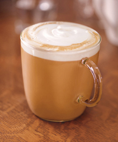
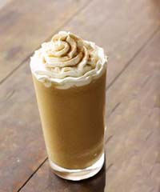
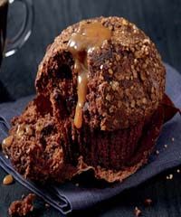

Welcome to Coffee Connection!
We’re not just passionate lovers of coffee, but everything else that goes with a full and rewarding coffeehouse experience. We also offer a selection of premium teas, fine pastries and other delectable treats. And the music you hear in store is chosen for its artistry and appeal.
It’s not unusual to see people coming to Coffee Connection to chat, meet up or even work. We’re a neighborhood gathering place, a part of the daily routine, and would like to be part of your way of life.
Espresso

Popular espresso beverages
Blended

Delicious icy blends
Pastries

Muffins, bagels, coffee cakes, and more
Food

Sandwiches, paninis, salads and more
Breakfast

Biscuits, muffins, wraps, croissants, oatmeal and more
Sign up to Receive Our Newsletter
A cup of coffee in the morning may provide more than just an energy boost. Health benefits, say some researchers, may range from helping prevent diabetes to lowering the risk of liver disease. With over 400 billion cups of coffee thought to be consumed every year, coffee is one of the world's most popular drinks. However, drinking too much coffee can result in some very unpleasant adverse effects. According to a study by researchers at the University of Oklahoma, caffeine can cause anxiety symptoms in normal individuals, especially in vulnerable patients, like those with pre-existing anxiety disorders.